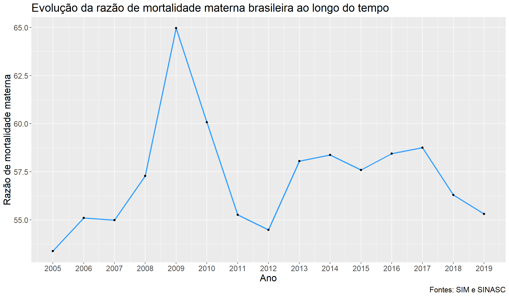
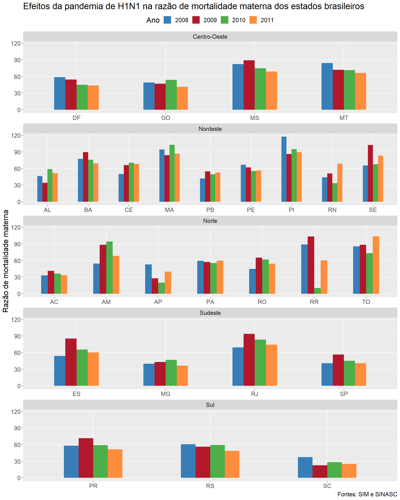
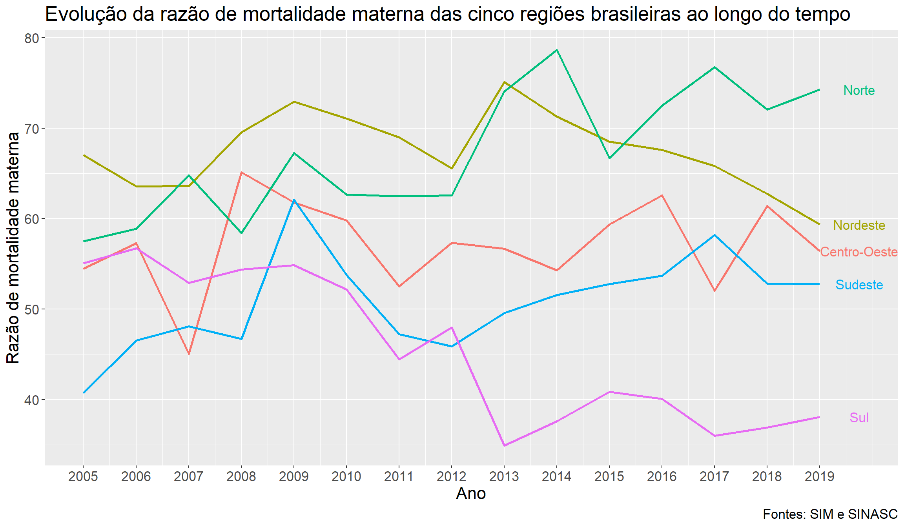
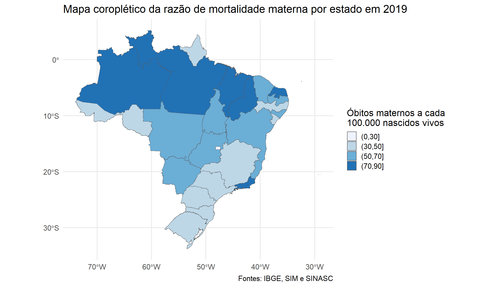

# Carregando os pacotes necessários
library(tidyverse)
library(sf)
library(DT)Introdução
Neste post, iremos discutir sobre o conceito de razão de mortalidade materna, utilizando o R para a realização de seu cálculo e para a visualização de sua evolução ao longo do tempo no Brasil. Em primeiro lugar, chama-se de razão de mortalidade materna (RMM) o indicador utilizado para conhecer o nível de morte materna, calculado pela razão entre o número de óbitos maternos e o número de nascidos vivos durante um período de tempo e em um determinado espaço geográfico, multiplicada por 100.000 (padrão internacional). Além disso, é considerado como “óbito materno” a “morte de uma mulher durante a gestação, parto ou dentro de um período de 42 dias após o término da gestação (o puerpério) (…), devida a qualquer causa relacionada com ou agravada pela gravidez ou por medidas em relação a ela, porém não devida às causas acidentais ou incidentais” (OMS, 1997). Matematicamente, temos que a razão de mortalidade materna é dada por:
\[\frac{\text{Nº de óbitos maternos em um dado período de tempo e espaço geográfico}}{\text{Nº de nascidos vivos sob essas mesmas condições}} \times 100.000\]
O resultado do cálculo acima deve ser interpretado como sendo o número de óbitos maternos em um dado período de tempo e em um certo espaço geográfico a cada 100.000 nascidos vivos nessas mesmas condições. Apesar de, em teoria, ser mais correta a utilização do número total de gestações para o denominador dessa razão, a impossibilidade de obtenção desse dado faz com que utilizemos em seu lugar o número total de nascidos vivos, tornando o resultado encontrado para a taxa uma aproximação do seu verdadeiro valor. É também importante destacar que, diferentemente do Ministério da Saúde, que realiza correções no cálculo da razão de mortalidade materna para levar em consideração a subenumeração de mortes maternas e de nascidos vivos, trabalharemos nesse post com a razão de mortalidade materna em seu estado natural, sem maiores modificações.
Com esses conceitos iniciais em mente, passemos, agora, para o cálculo dessa razão no R, bem como para diferentes formas de como podemos visualizar sua evolução no país ao longo dos anos.
Carregando os pacotes necessários e importando a base de dados
Para a realização do cálculo da razão de mortalidade materna no R, precisamos, primeiramente, carregar o pacote tidyverse, formado por uma coleção de outros pacotes que nos serão úteis, em especial o dplyr, o readr e o ggplot2. Carregaremos, também, os pacotes sf e DT, que serão utilizados, respectivamente, para a leitura de um arquivo do tipo shapefile e para a construção de uma tabela, ambos no último exemplo do texto.
Para importar a base de dados com a qual trabalharemos ao longo do post, será utilizada a função read_delim, do pacote readr, que receberá dois argumentos: o primeiro, file, recebe o nome do arquivo .csv que contém nossa base de dados; já o segundo argumento, delim, recebe o delimitador utilizado no arquivo para separar suas colunas, que nesse caso é o ponto e vírgula. A base de dados será salva no objeto nomeado por dados_maternos. Caso queira, você também pode realizar o download do arquivo através deste link.
dados_maternos <- read_delim(file = "dados_maternos.csv", delim = ";")A tibble dados_maternos é formada por seis colunas, que contêm, respectivamente, o código do estado, sua sigla, a região à qual o estado pertence, o ano ao qual a linha se refere (indo de 2005 a 2019, uma vez que os dados de 2020 e 2021 ainda são preliminares), o número de nascidos vivos no estado no dado ano e o número de óbitos maternos no mesmo. As linhas da tibble estão ordenadas de acordo com o código das unidades federativas. Os dados referentes aos nascidos vivos são provenientes do SINASC (Sistema de Informações sobre Nascidos Vivos) e foram obtidos através do Painel de Monitoramento de Nascidos Vivos do Ministério da Saúde, enquanto as informações sobre os óbitos maternos são provenientes do SIM (Sistema de Informações sobre Mortalidade) e foram obtidas por meio do Painel de Monitoramento da Mortalidade Materna do mesmo órgão. Observe abaixo as dez primeiras linhas da tibble.
dados_maternos# A tibble: 405 × 6
codigo_uf uf regiao ano nascimentos obitos
<dbl> <chr> <chr> <dbl> <dbl> <dbl>
1 11 RO Norte 2005 28081 15
2 11 RO Norte 2006 24925 15
3 11 RO Norte 2007 22996 10
4 11 RO Norte 2008 26791 12
5 11 RO Norte 2009 26083 17
6 11 RO Norte 2010 25835 16
7 11 RO Norte 2011 27658 15
8 11 RO Norte 2012 26513 17
9 11 RO Norte 2013 27097 18
10 11 RO Norte 2014 27560 22
# ℹ 395 more rowsCalculando a razão de mortalidade materna e a adicionando à base de dados
Caso nosso interesse seja apenas adicionar uma coluna contendo a razão de mortalidade materna para cada estado e ano à nossa base de dados, precisamos apenas executar um comando. Utilizando a função mutate, do pacote dplyr, adicionaremos uma nova coluna à tibble dados_maternos, a qual nomearemos por “mortalidade”. Essa nova coluna será formada por um vetor de números no qual cada posição representa o valor do cálculo discutido na seção anterior para cada uma das linhas de dados_maternos, arredondados para duas casas decimais por meio da função round, do pacote básico base. Por padrão, a função mutate irá manter todas as colunas originais da tibble utlizada, adicionando a nova coluna em seu lado direito.
# Calculando a razão de mortalidade materna e a adicionando à base de dados
dados_maternos <- dados_maternos |>
mutate("mortalidade" = round((dados_maternos$obitos/dados_maternos$nascimentos) * 100000, digits = 2))As primeiras linhas do objeto resultante desse processo podem ser vistas a seguir:
dados_maternos# A tibble: 405 × 7
codigo_uf uf regiao ano nascimentos obitos mortalidade
<dbl> <chr> <chr> <dbl> <dbl> <dbl> <dbl>
1 11 RO Norte 2005 28081 15 53.4
2 11 RO Norte 2006 24925 15 60.2
3 11 RO Norte 2007 22996 10 43.5
4 11 RO Norte 2008 26791 12 44.8
5 11 RO Norte 2009 26083 17 65.2
6 11 RO Norte 2010 25835 16 61.9
7 11 RO Norte 2011 27658 15 54.2
8 11 RO Norte 2012 26513 17 64.1
9 11 RO Norte 2013 27097 18 66.4
10 11 RO Norte 2014 27560 22 79.8
# ℹ 395 more rowsAnalisando a evolução da razão de mortalidade materna nacional através de um gráfico de linhas
Agora que já sabemos como calcular a razão de mortalidade materna e como adicioná-la à nossa base de dados, podemos passar para algumas análises e manipulações mais interessantes. O primeiro exemplo tratará de uma visão nacional do indicador. Para realizar uma análise de sua evolução ao longo dos anos, utilizaremos um gráfico de linhas, tipo de gráfico muito útil quando o objetivo é observar o comportamento de séries temporais. Primeiramente, precisamos agrupar nossa base de dados por ano, uma vez que queremos analisar todos os estados de forma conjunta. Para isso, será utilizada a função group_by, do pacote dplyr, na qual o primeiro argumento é o data.frame, ou tibble, no(a) qual a operação será realizada, e o segundo argumento é o nome da variável pela qual queremos que os dados sejam agrupados. Caso tivéssemos interesse em agrupá-los por mais de uma variável, bastaria adicionar os nomes das outras variáveis após “ano”, separados por vírgula.
# Agrupando os dados por ano e os resumindo
dados_maternos_nacional <- group_by(dados_maternos, ano) |>
summarise(nascimentos_br = sum(nascimentos),
obitos_br = sum(obitos),
mortalidade_br = round((obitos_br/nascimentos_br) * 100000, 2)) Feito o agrupamento, utilizamos a função summarise, também do pacote dplyr, para realizar a criação de uma nova tibble, que será como um resumo de dados_maternos. O número de linhas dessa tibble será igual ao número de combinações possíveis das variáveis agrupadas no passo anterior; como agrupamos apenas por ano, a nova tibble terá 15 linhas, uma para cada ano diferente presente na base de dados utilizada. Os argumentos de summarise serão pares de nomes e funções, nos quais os primeiros serão os nomes das colunas que irão compor a nova tibble, e as segundas são as funções que serão aplicadas na variável indicada da tibble original. Assim, criaremos três novas colunas: nascimentos_br, que receberá a soma de todos os nascidos vivos no dado ano; obitos_br, que receberá a soma de todos os óbitos maternos no dado ano; e mortalidade_br, que receberá a razão de mortalidade materna do período.
Note que não tivemos que dizer qual o data.frame (ou tibble) que seria utilizado nessa função, visto que estamos utilizando o operador pipe (|>) para encadear as funções group_by e summarise. O resultado desse código, guardado no objeto dados_maternos_nacional, é uma tibble cujas primeiras linhas podem ser vistas a seguir:
dados_maternos_nacional# A tibble: 15 × 4
ano nascimentos_br obitos_br mortalidade_br
<dbl> <dbl> <dbl> <dbl>
1 2005 3035096 1620 53.4
2 2006 2944928 1623 55.1
3 2007 2891328 1590 55.0
4 2008 2934828 1681 57.3
5 2009 2881581 1872 65.0
6 2010 2861868 1719 60.1
7 2011 2913160 1610 55.3
8 2012 2905789 1583 54.5
9 2013 2904027 1686 58.1
10 2014 2979259 1739 58.4
11 2015 3017668 1738 57.6
12 2016 2857800 1670 58.4
13 2017 2923535 1718 58.8
14 2018 2944932 1658 56.3
15 2019 2849146 1576 55.3Com os dados preparados, podemos partir para a construção do gráfico de linhas, na qual utilizaremos a função ggplot, do pacote ggplot2. Atribuiremos ao argumento data a tibble dados_maternos_nacional, e ao argumento mapping os aesthetics do nosso gráfico, que nesse caso serão apenas o eixo x, que receberá a variável ano, e o eixo y, que receberá a variável mortalidade_br. O primeiro complemento do gráfico será a função geom_line, que criará a(s) linha(s) do gráfico de linhas. Os únicos argumentos que utilizaremos nessa função serão o color, para alterar a cor da linha a ser gerada, e o size, para alterar sua expessura. O próximo complemento, geom_point, é utilizado para fazer gráficos de dispersão, e criará pontos em nosso gráfico para facilitar sua visualização. Em scale_x_continuous, definimos que as marcações do eixo x devem ocorrer de ano em ano. O título do gráfico, sua legenda e os nomes dos eixos são atribuídos pelo complemento labs, e utilizaremos theme apenas para alterar o tamanho dos textos do gráfico.
# Construindo o gráfico de linhas
ggplot(data = dados_maternos_nacional, mapping = aes(x = ano, y = mortalidade_br)) +
geom_line(color = "#32A0FF", size = 1) +
geom_point() +
scale_x_continuous(breaks = unique(dados_maternos_nacional$ano)) +
labs(title = "Evolução da razão de mortalidade materna brasileira ao longo do tempo",
caption = "Fontes: SIM e SINASC",
x = "Ano",
y = "Razão de mortalidade materna") +
theme(text = element_text(size = 16)) 
Uma análise rápida do gráfico nos permite fazer um questionamento óbvio: o que aconteceu de 2008 para 2009 para que a razão de mortalidade materna nacional tivesse um aumento tão significativo em seu valor? A resposta, um assunto que está atualmente em alta: uma pandemia, que nesse caso era do vírus da Influenza A (H1N1). Observe o próximo exemplo para ter uma melhor noção dos efeitos dessa pandemia na razão de mortalidade materna em uma escala estadual.
Utilizando gráficos de barras para visualizar os efeitos da pandemia de H1N1 nos estados brasileiros
Iniciada no México em abril de 2009, a pandemia do vírus da Influnza A, assim declarada em junho do mesmo ano pela OMS (G1, 2009), espalhou-se rapidamente pelo mundo. No Brasil, até dezembro de 2010, foram confirmados 59.867 casos e 2.173 mortes (da população geral) pelo vírus, de acordo com dados do Ministério da Saúde. Gestantes, entretanto, estão mais suscetíveis às complicações e aos óbitos por doenças infecciosas, como é o caso da Influenza. Dessa forma, mesmo que esse grupo de mulheres tenha sido precocemente identificado como um grupo de risco durante a pandemia de H1N1, houve, no ano de 2009, um aumento no número de óbitos maternos (e consequentemente, na razão de mortalidade materna, como observado no gráfico anterior), visto que a campanha nacional de vacinação contra o vírus foi iniciada apenas em março de 2010.
Para este exemplo, digamos que seja de nosso interesse realizar a seguinte análise: observar a evolução das razões de mortalidade materna por estado nos anos de 2008 (pré-pandemia), 2009 (durante a pandemia), 2010 (início da vacinação) e 2011 (pós-pandemia), utilizando para isso uma série de gráficos de barras. O primeiro passo, como no exemplo anterior, é a preparação dos dados. Para realizá-la, utilizaremos a função filter, do pacote dplyr que filtrará no banco de dados designado apenas as linhas em que todas as condições dadas forem satisfeitas. Dessa forma, os argumentos dessa função devem ser expressões que retornem um valor lógico. No nosso caso, queremos filtrar as linhas da tibble dados_maternos nas quais a variável ano está entre 2008 e 2011, considerando os extremos. A tibble resultante dessa operação será salva em dados_maternos_h1n1.
# Filtrando apenas os dados de 2008 a 2010
dados_maternos_h1n1 <- dados_maternos |>
filter(ano >= 2008 & ano <= 2011) A construção do gráfico, apesar de também ser feita através do pacote ggplot2, é significativamente diferente àquela feita no exemplo anterior. Dentro da função ggplot, o argumento data receberá a tibble criada acima, enquanto os aesthetics do gráfico serão três: no eixo x, queremos a variável uf; no eixo y, a variável mortalidade; por fim, o argumento fill determinará de que forma cada barra do gráfico será preenchida, e queremos que seja de acordo com a variável ano. Note que estamos transformando essa última variável numa variável categórica por meio da função as.factor.
O primeiro complemento do gráfico é a função geom_col, a qual construirá nossos gráficos de barras e que possui dois argumentos: position = “dodge”, que faz com que as barras construídas para cada estado sejam postas lado a lado, facilitando sua visualização, e width = 0.5, que muda a expessura das barras. O próximo complemento, facet_wrap, será responsável pela mágica desse exemplo. Imagine como seria péssima a visualização de 27 gráficos de barras, com quatro barras cada, numa única linha. Lembre-se, entretanto, que a nossa tibble dados_maternos_h1n1 possui uma coluna que especifica a região de cada estado. Assim, utilizaremos a função facet_wrap para que nosso gráfico contenha cinco fileiras de gráficos de barras, separando os gráficos de cada estado de acordo com a região à qual pertencem. Os argumentos que iremos utilizar são três: facets = vars(regiao) indicará que o gráfico deve ser separado pela variável regiao; scales = “free_x” torna as escalas do eixo x livres, fazendo com que os únicos valores exibidos no eixo x de cada gráfico sejam os estados que pertencem à dada região; o último, ncol = 1, define que o gráfico deve ter apenas uma coluna. Com o complemento scale_fill_manual, definiremos cores específicas para cada um dos quatro anos presentes no gráfico. Por fim, mudamos a posição da legenda do gráfico para o topo, utilizando o argumento legend.position = “top”, do complemento theme(). O gráfico resultante de todo esse processo pode ser visto abaixo.
# Construindo os gráficos de barras
ggplot(data = dados_maternos_h1n1,
mapping = aes(x = uf, y = mortalidade, fill = as.factor(ano))) +
geom_col(position = "dodge", width = 0.5) +
facet_wrap(facets = vars(regiao), scales = "free_x", ncol = 1) +
labs(title = "Efeitos da pandemia de H1N1 na razão de mortalidade materna dos estados brasileiros",
caption = "Fontes: SIM e SINASC",
x = NULL,
y = "Razão de mortalidade materna",
fill = "Ano") +
scale_fill_manual(values = c("#377EB8", "#B2182B", "#4DAF4A", "#FD8D3C")) +
theme(legend.position = "top", text = element_text(size = 16)) 
Analisando os gráficos acima, podemos realizar algumas observações. Em primeiro lugar, 15 dos 27 estados brasileiros apresentaram um aumento na razão de mortalidade materna em 2009, incluindo todos os quatro estados da região Sudeste. Já em 2010, ano em que foi iniciada a campanha de vacinação nacional, podemos observar um efeito contrário: 18 dos 27 estados tiveram o valor de sua razão diminuído, tendência que também pode ser observada em 2011, primeiro ano pós-pandemia, no qual 19 unidades federativas apresentaram uma redução em sua razão de mortalidade materna. Apesar de não podermos afirmar com plena certeza, sem análises mais profundas, que a pandemia da Influenza A, bem como seu declínio e o início da vacinação, são os responsáveis pelos efeitos citados observando apenas os gráficos feitos, podemos, no mínimo, considerá-los como fortes candidatos. Mas passemos agora para o próximo exemplo. Vamos falar sobre as diferenças regionais do Brasil no que tange à razão de mortalidade materna.
Observando a heterogeneidade das regiões brasileiras por meio de um gráfico de linhas
Não é segredo que o território brasileiro é marcado por intensas diferenças socioeconômicas nas mais diversas escalas geográficas. Quando pensamos nas regiões do país, sabemos que, historicamente, uma série de fatores como a concentração industrial, a ocupação tardia e aspectos naturias contribuíram para o desenvolvimento desigual das mesmas, o que pode ser constatado através da comparação entre vários tipos de indicadores das cinco regiões brasileiras. Tomando como exemplo o IDHM (Índice de Desenvolvimento Humano Municipal), temos, de acordo com dados do PNUD (Programa das Nações Unidas para o Desenvolvimento), que em 2016 as regiões Norte e Nordeste possuíam os piores índices do país, atingindo, respectivamente, 0,667 e 0,663, números consideravelmente mais baixos do que os das regiões Sudeste (0,766), Centro-Oeste (0,757) e Sul (0,754). No que diz respeito à razão de mortalidade materna, veremos neste exemplo que essa tendência se repete, utilizando, para isso, um gráfico de (várias) linhas que nos permitirá analisar como se dá a desigualdade desse indicador entre as cinco regiões do Brasil.
O primeiro passo, como sempre, é preparar os dados. De forma semelhante ao exemplo anterior, vamos agrupar os dados utilizando a função group_by e os resumir com summarise. A diferença é que aqui estaremos agrupando a tibble dados_maternos por região e ano, ao invés de agrupá-los somente por ano.
# Agrupando os dados por região e ano e os resumindo
dados_maternos_regional <- group_by(dados_maternos, regiao, ano) |>
summarise(nascimentos_reg = sum(nascimentos),
obitos_reg = sum(obitos),
mortalidade_reg = round((obitos_reg/nascimentos_reg) * 100000, 2))Quanto ao gráfico, utilizaremos para o argumento data, da função ggplot, a tibble criada no passo anterior, enquanto os aesthetics de mapping serão três: no eixo x, deve ser representada a variável ano; no eixo y, a variável mortalidade_reg; quanto ao argumento color, queremos que as linhas sejam coloridas de acordo com a variável regiao. O complemento geom_line criará as linhas do gráfico, cuja expessura é alterada utilizando o argumento color. Em scale_x_continuous, definiremos com o argumento breaks que as marcações do eixo x devem ocorrer em intervalos de um ano. Com o complemento geom_text, escreveremos ao final das linhas a respectiva região que cada linha representa. Para isso, no argumento data, filtraremos nossa tibble para manter apenas as linhas em que o ano é o último, ou seja, 2019. Os aesthetics de mapping serão os seguintes: em label, onde devemos dizer o que será escrito no gráfico, escolhemos a variável regiao, o que fará com que sejam escritos os nomes das cinco regiões; em x, definimos as coordenadas do eixo x em que serão escritos os textos determinados em label, os quais deverão estar levemente à direita do último ano de registro; em y, designamos as coordenadas do eixo y nas quais os textos serão escritos, e queremos que eles estejam na altura da razão de mortalidade materna do último ano; por fim, definimos em color que os textos devem ser coloridos de acordo com a variável regiao. O argumento clip = “off”, do complemento coord_cartesian, garante que os nomes das regiões não sejam cortados caso ultrapassem os limites do gráfico. Veja a seguir o gráfico resultante desse código.
# Construindo o gráfico de linhas
ggplot(data = dados_maternos_regional,
mapping = aes(x = ano,
y = mortalidade_reg,
color = regiao)) +
geom_line(size = 1) +
scale_x_continuous(breaks = unique(dados_maternos_regional$ano)) +
labs(title = "Evolução da razão de mortalidade materna das cinco regiões brasileiras ao longo do tempo",
caption = "Fontes: SIM e SINASC",
x = "Ano",
y = "Razão de mortalidade materna") +
geom_text(data = dados_maternos_regional |> filter(ano == last(ano)),
mapping = aes(label = regiao,
x = ano + 0.75,
y = mortalidade_reg,
color = regiao),
size = 4.5) +
coord_cartesian(clip = "off") +
theme(legend.position = "none", text = element_text(size = 16))
Observando o gráfico acima, podemos destacar alguns pontos de interesse. Em primeiro lugar, é possível observar que em todos os anos analisados as regiões Norte ou Nordeste apresentaram as maiores razões de mortalidade materna do país, enquanto as regiões Sul ou Sudeste só não estiveram na outra ponta desse espectro no ano de 2007, quando a região Centro-Oeste apresentou o menor índice do Brasil. Além disso, outro ponto notório é o aumento expressivo nos valores desse indicador de 2008 para 2009 em quatro das cinco regiões brasileiras, assunto que já exploramos anteriormente. Por fim, podemos salientar a diminuição contínua na razão de mortalidade materna nordestina a partir de 2013, atingindo em 2019 níveis comparáveis aos da região Centro-Oeste. Vamos agora para o último exemplo deste post, no qual faremos uma breve análise do cenário atual da razão de mortalidade materna no país.
Analisando o cenário atual da razão de mortalidade materna brasileira por meio de um mapa coroplético
No ano de 2000, foram estabelecidos através da Declaração do Milênio da ONU os Objetivos de Desenvolvimento do Milênio (ODM), adotados por 191 Estados-membros (incluindo o Brasil), nos quais foram estipulados uma série de compromissos que visavam uma grande melhoria na qualidade de vida da população mundial até 2015. Entre esses objetivos, ficou estabelecido que o Brasil deveria reduzir, até o ano de 2015, a razão de mortalidade materna para 35 óbitos maternos a cada 100.000 nascidos vivos. O país, entretanto, assim como boa parte dos outros países signatários, falhou miseravelmente. Dessa forma, em 2015, foi proposta pela ONU uma nova agenda de desenvolvimento sustentável para os próximos 15 anos, a Agenda 2030, formada por 17 Objetivos de Desenvolvimento Sustentável (ODS). Nesses novos objetivos, o Brasil se comprometeu a reduzir, até 2030, a razão de mortalidade materna para 30 óbitos maternos a cada 100.000 nascidos vivos. Assim, nesse exemplo, utilizaremos um mapa coroplético para analisar o cenário atual desse indicador no país, discutindo sobre os impasses que dificultam a plena realização dos compromissos firmados perante à ONU em tempo hábil.
Para começo de conversa, um mapa coroplético é um tipo de mapa que utiliza cores de diferentes intensidades para exibir como o valor de uma certa variável varia numa determinada localização geográfica, utilizando colorações mais claras quando o valor dessa variável é menor e colorações mais escuras quando é maior. No nosso caso, estamos interessados em fazer um mapa cloroplético que represente a variação da razão de mortalidade materna de 2019 entre cada estado brasileiro.
O primeiro passo para a construção desse mapa é obter um arquivo do tipo shapefile que contenha o mapa do Brasil com as delimitações dos estados. Por sorte, o IBGE disponibiliza em seu site tais arquivos para que qualquer pessoa possa realizar os seus downloads. Para facilitar o processo, faremos o download e a descompactação do arquivo de interesse diretamente com o R.
Primeiramente, guardaremos no vetor link_ufs o endereço do site do IBGE no qual o arquivo desejado está localizado. Com a função tempdir, do pacote básico base, criaremos um diretório temporário no qual o arquivo será salvo, realizando seu download através da função download.file, do pacote básico utils. Utilizaremos dois argumentos dessa função: o url, que recebe o link de download para o arquivo, e o destfile, que recebe o diretório no qual o arquivo será salvo, bem como seu nome. A descompactação do arquivo será realizada com a função unzip, também do pacote básico utils, na qual utilizamos o argumento zipfile para apontar o diretório no qual o arquivo está localizado, juntamente com seu nome, e o argumento exdir para dizer em qual diretório queremos que o arquivo descompactado se localize. Feito isso, aplicaremos a função st_read, do pacote sf, carregado no início do post, para ler o arquivo BR_UF_2020.shp, salvo no diretório temporário que criamos, e que contém os dados necessários para a construção do mapa brasileiro com as delimitações de cada estado. O resultado desse processo é um data.frame que será guardado no objeto br_ufs.
# Fazendo o download e a descompactação dos arquivos necessários para o mapa coroplético
link_ufs <- "ftp://geoftp.ibge.gov.br/organizacao_do_territorio/malhas_territoriais/malhas_municipais/municipio_2020/Brasil/BR/BR_UF_2020.zip"
tmp_dir <- tempdir()
download.file(url = link_ufs, destfile = file.path(tmp_dir, 'BR_UF_2020.zip'))
unzip(zipfile = file.path(tmp_dir, 'BR_UF_2020.zip'),
exdir = tmp_dir)
br_ufs <- st_read(dsn = file.path(tmp_dir, "BR_UF_2020.shp"),
stringsAsFactors = FALSE,
quiet = TRUE)Veja abaixo as primeiras linhas de br_ufs. Note que as linhas estão ordenadas de acordo com o código dos estados, assim como a tibble dados_maternos com a qual estamos trabalhando.
head(br_ufs)Simple feature collection with 6 features and 4 fields
Geometry type: MULTIPOLYGON
Dimension: XY
Bounding box: xmin: -73.99045 ymin: -13.6937 xmax: -46.06142 ymax: 5.271841
Geodetic CRS: SIRGAS 2000
CD_UF NM_UF SIGLA_UF NM_REGIAO geometry
1 11 Rondônia RO Norte MULTIPOLYGON (((-65.3815 -1...
2 12 Acre AC Norte MULTIPOLYGON (((-71.07772 -...
3 13 Amazonas AM Norte MULTIPOLYGON (((-69.83766 -...
4 14 Roraima RR Norte MULTIPOLYGON (((-63.96008 2...
5 15 Pará PA Norte MULTIPOLYGON (((-51.43248 -...
6 16 Amapá AP Norte MULTIPOLYGON (((-50.45011 2...O próximo passo é adicionar ao data.frame criado acima a variável quantitativa com a qual queremos preencher nosso mapa, que nesse caso é a razão de mortalidade materna estadual do ano de 2019. Como a tibble dados_maternos, criada no início do post, também está ordenada de acordo com o código dos estados, precisamos apenas guardar no vetor mortalidade_2019 o valor das razões de mortalidade materna estaduais do ano de 2019, utilizando para isso a função which, do pacote básico base. Após esse passo, utilizaremos a função mutate para adicionar ao data.frame br_ufs uma nova coluna, nomeada por mort_ufs, que será preenchida pelo vetor mortalidade_2019. Observe, entretanto, que estamos aplicando nesse vetor a função cut, que irá dividi-lo nos intervalos especificados. Assim, os valores que realmente serão atribuídos à coluna mort_ufs serão os intervalos nos quais as razões de mortalidade se encontram. É importante frizar que a concatenação entre o vetor mortalidade_2019 e o data.frame br_ufs só poderá ser feita de forma direta porque ambos estão ordenados de acordo com o código das unidades federativas brasileiras.
# Obtendo as razões de 2019, separando-as em intervalos e adicionando ao data.frame br_ufs
mortalidade_2019 <- dados_maternos$mortalidade[which(dados_maternos$ano == 2019)]
br_ufs <- br_ufs |> mutate("mort_ufs" = cut(mortalidade_2019, c(0, 30, 50, 70, 90)))O data.frame resultante do processo é o seguinte:
head(br_ufs)Simple feature collection with 6 features and 5 fields
Geometry type: MULTIPOLYGON
Dimension: XY
Bounding box: xmin: -73.99045 ymin: -13.6937 xmax: -46.06142 ymax: 5.271841
Geodetic CRS: SIRGAS 2000
CD_UF NM_UF SIGLA_UF NM_REGIAO geometry mort_ufs
1 11 Rondônia RO Norte MULTIPOLYGON (((-65.3815 -1... (30,50]
2 12 Acre AC Norte MULTIPOLYGON (((-71.07772 -... (30,50]
3 13 Amazonas AM Norte MULTIPOLYGON (((-69.83766 -... (70,90]
4 14 Roraima RR Norte MULTIPOLYGON (((-63.96008 2... (70,90]
5 15 Pará PA Norte MULTIPOLYGON (((-51.43248 -... (70,90]
6 16 Amapá AP Norte MULTIPOLYGON (((-50.45011 2... (30,50]Com os dados preparados, podemos, finalmente, partir para a construção do nosso mapa cloroplético, utilizando para isso a função geom_sf, do pacote ggplot2. O aesthetic fill = mort_ufs, da função ggplot, preencherá os estados de acordo com o intervalo no qual suas razões de mortalidade materna se encontram. Os demais complementos do gráfico já foram explicados ao longo dos exemplos anteriores.
# Construindo o mapa coroplético
ggplot(data = br_ufs, mapping = aes(fill = mort_ufs)) +
geom_sf() +
labs(title = "Mapa coroplético da razão de mortalidade materna por estado em 2019",
caption = "Fontes: IBGE, SIM e SINASC",
fill = paste(c("Óbitos maternos a cada", "100.000 nascidos vivos"), collapse = "\n")) +
scale_fill_brewer(palette = "Blues") +
theme_minimal(base_size = 16)
Se o Brasil planeja honrar o compromisso de reduzir a razão de mortalidade materna para 30 óbitos maternos a cada 100.000 nascidos vivos, claramente há um caminho árduo a ser percorrido. Observando o gráfico acima, podemos perceber que, de todos as 27 unidades federativas brasileiras, apenas o Distrito Federal estava abaixo do limite desejado em 2019, com 21,22 óbitos maternos a cada 100.000 nascidos vivos, enquanto outros 10 estados tinham sua razão de mortalidade materna dentro do intervalo de 30 a 50 óbitos maternos. Sete estados possuíam essa razão entre 70 e 90, dos quais seis se localizam nas regiões Norte ou Nordeste, o que concorda com a discussão anterior sobre as desigualdades regionais existentes no território brasileiro. Vale destacar ainda que estamos considerando os dados de 2019 como os mais atuais, visto que os dados de 2020 e 2021 são preliminares. Esses dois anos, entretanto, foram os anos em que, respectivamente, a pandemia da Covid-19 se iniciou e atingiu seu ápice. Quando consideramos que a pandemia da Influenza A foi responsável por um aumento significativo da razão de mortalidade materna nacional em 2009, mesmo que tenha causado “apenas” 2.101 óbitos totais no país, é assustador imaginar o efeito da atual pandemia nesse indicador, dado que já foram registrados mais de 627 mil óbitos pelo novo Coronavírus desde março de 2020, de acordo com o Ministério da Saúde.
Caso seja de seu interesse realizar uma leitura mais profunda sobre os dados do gráfico, terminaremos este exemplo construindo uma tabela que contém as razões de mortalidade materna estaduais em sua forma bruta, sem a divisão por intervalos. Para isso, filtraremos, primeiramente, a tibble dados_maternos para obter somente as linhas cujo ano é 2019, utilizando nesse processo a função filter. Na tibble resultante, aplicaremos a função select para selecionar todas as variáveis que queremos que estejam na tabela, e que nesse caso serão a sigla da unidade federativa, a região à qual pertence, o número de nascidos vivos e de óbitos maternos em 2019, e a razão de mortalidade materna de cada estado nesse mesmo período. Com a função arrange, ordenaremos os dados de forma crescente em relação à variável mortalidade. Por fim, com rename, renomearemos as colunas com os nomes que devem constar na tabela. A tibble resultante desse passo será guardada no objeto dados_2019, e todas as funções utilizadas nessa sequência pertencem ao pacote dplyr.
# Preparando os dados para a construção da tabela
dados_2019 <- filter(dados_maternos, ano == 2019) |>
select(uf, regiao, nascimentos, obitos, mortalidade) |>
arrange(mortalidade) |>
rename("UF" = uf,
"Região" = regiao,
"Nº de nascimentos" = nascimentos,
"Nº de óbitos maternos" = obitos,
"Razão de mortalidade materna" = mortalidade)Para a construção da tabela, será utilizada a função datatable, do pacote DT, carregado no início do post. O primeiro argumento da função, data, recebe a tibble dados_2019, criada no passo anterior. Em caption, diremos qual deve ser a legenda da tabela. O argumento options recebe uma lista de customizações que a tabela deve conter: desabilitamos a caixa de pesquisa utilizando searching = FALSE; com paging = FALSE, impedimos que a tabela seja separada em páginas; por fim, através de columnDefs = list(list(className = “dt-center”, targets = “_all”))), determinamos que o alinhamento de todas as colunas deve ser centralizado. O resultado final de todo o processo pode ser visto a seguir.
# Construindo a tabela
datatable(data = dados_2019,
caption = "Tabela: Razão de mortalidade materna das unidades federativas brasileiras em 2019",
rownames = FALSE,
options = list(searching = FALSE,
paging = FALSE,
columnDefs = list(list(className = "dt-center", targets = "_all")))
)E com isso, aqui chegamos ao fim desse post. Esperamos que, por meio dessa leitura, os conceitos relativos à razão de mortalidade materna tenham ficado claros, e que os exemplos apresentados ao longo do texto tenham sido informativos o suficiente ao ponto de ser possível não só entender melhor sobre esse indicador, mas também descobrir novas funções e tipos diferentes de análises, principalmente visuais, que podem ser feitas através do R.
Referências
https://bvsms.saude.gov.br/bvs/publicacoes/qualificacao_saude_sup/pdf/Atenc_saude3fase.pdf
http://svs.aids.gov.br/dantps/cgiae/sinasc/
http://svs.aids.gov.br/dantps/cgiae/sim/
https://g1.globo.com/Sites/Especiais/Noticias/0,,MUL1191163-16726,00-ORGANIZACAO+MUNDIAL+DE+SAUDE+DECLARA+PANDEMIA+DA+NOVA+GRIPE.html
https://piaui.folha.uol.com.br/lupa/2020/03/27/verificamos-coronavirus-h1n1/
https://portaldeboaspraticas.iff.fiocruz.br/biblioteca/desenvolvimento-humano-nas-macrorregioesbrasileiras/
https://www.elsevier.es/es-revista-reproducao-climaterio-385-articulo-mortalidade-materna-no-brasil-insucesso-S1413208714000089
https://paulofelipe.github.io/bag_of_posts/posts/2018-10-21-mapa-coropltico-com-ggplot2/
https://covid.saude.gov.br/
https://www.ibge.gov.br/geociencias/organizacao-do-territorio/malhas-territoriais/15774-malhas.html?=&t=downloads
No matching items
Citation
BibTeX citation:
@online{sant'ana herzog2022,
author = {Sant’Ana Herzog, Rafael},
title = {Entendendo, Calculando e Visualizando a Razão de Mortalidade
Materna Do {Brasil} Com o {R}},
date = {2022-01-25},
url = {https://rafaherzog.github.io/rafasantanah/posts/25-01-2022-rmm/},
langid = {en}
}
For attribution, please cite this work as:
Sant’Ana Herzog, Rafael. 2022. “Entendendo, Calculando e
Visualizando a Razão de Mortalidade Materna Do Brasil Com o R.”
January 25, 2022. https://rafaherzog.github.io/rafasantanah/posts/25-01-2022-rmm/.